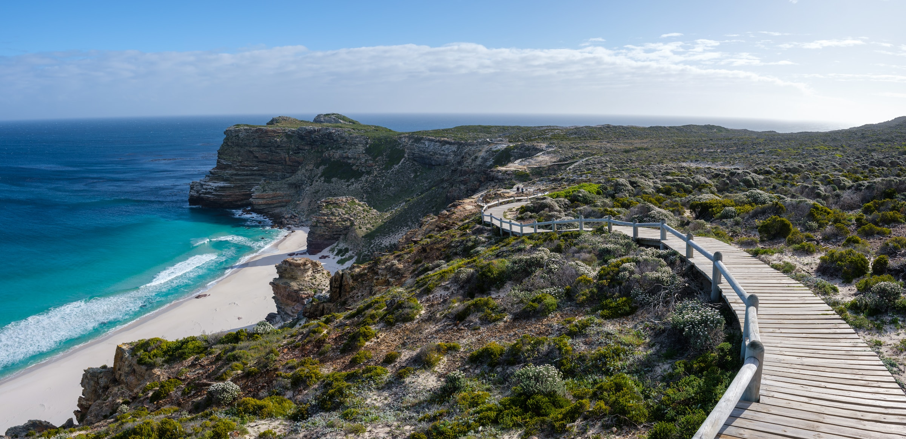
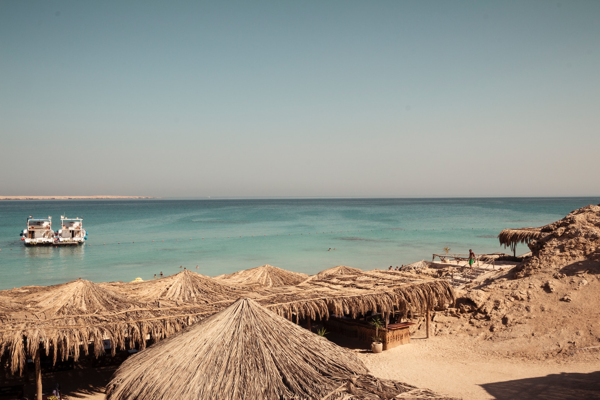
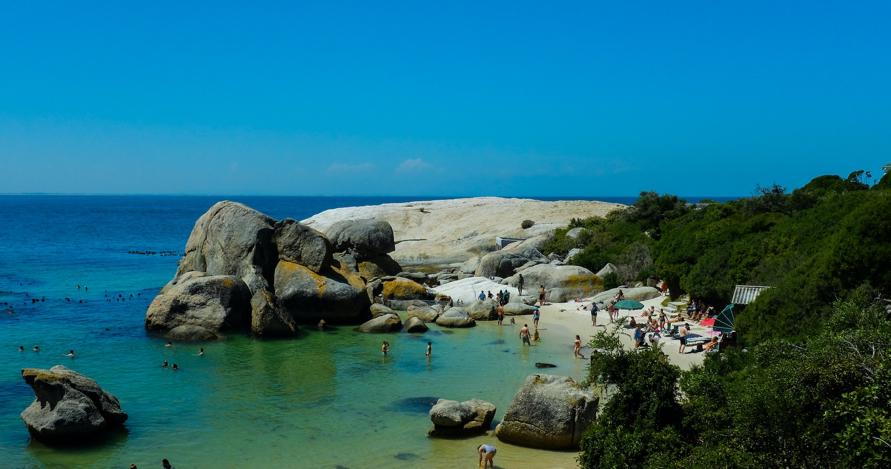
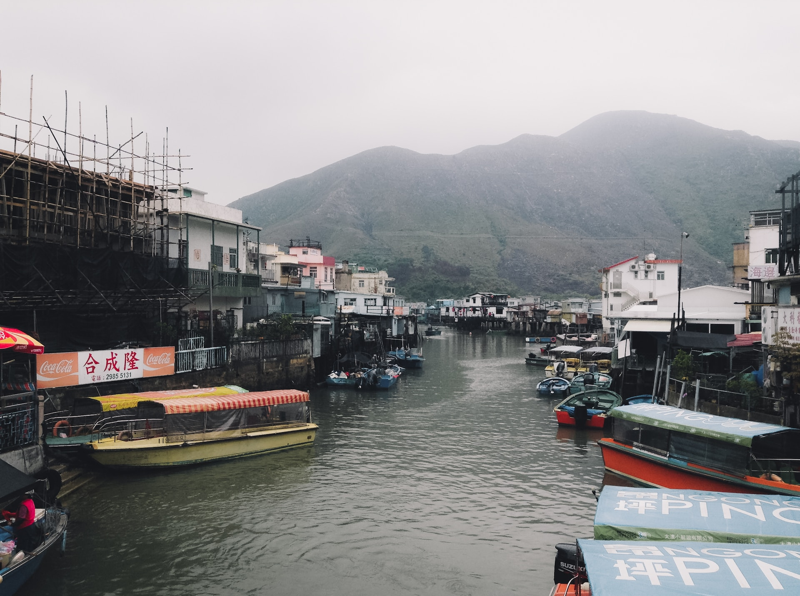
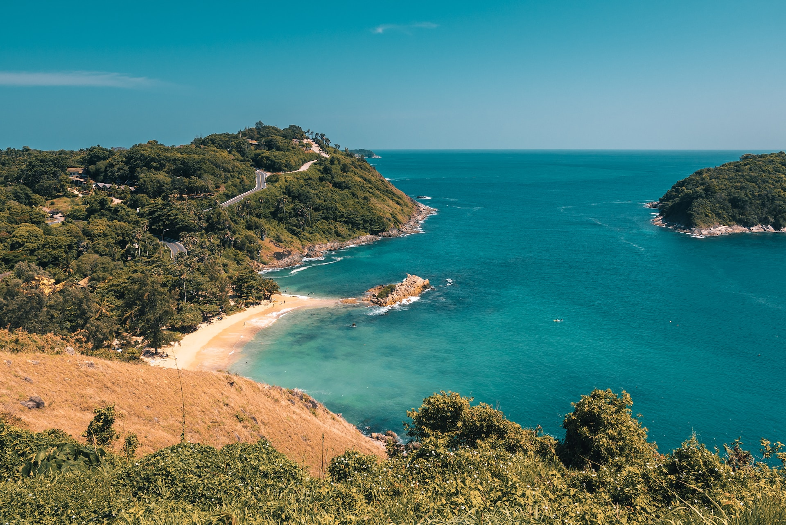
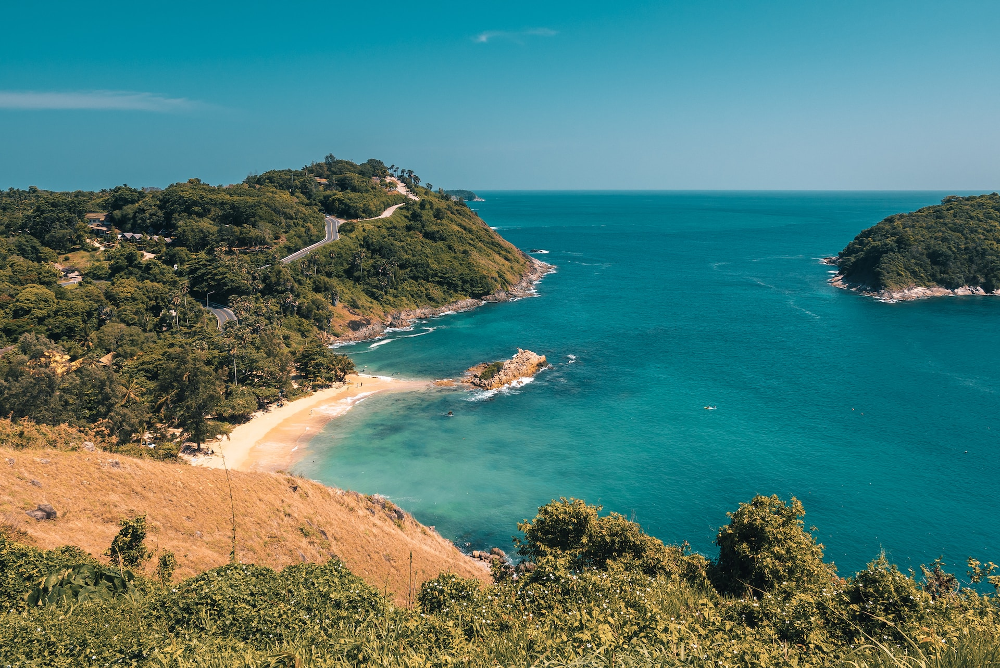
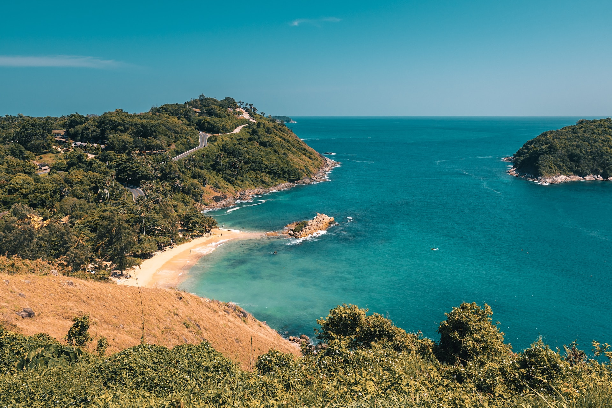

America:


Explore as maravilhas do continente americano com cruzeiros luxuosos que cobrem uma variedade de destinos. Isso inclui cruzeiros pelo Alasca, onde você pode desfrutar de paisagens deslumbrantes, geleiras imponentes e vida selvagem única. Também oferecemos cruzeiros para destinos no Caribe, como as Ilhas do Caribe, com suas praias de areia branca e águas cristalinas. Além disso, nossos cruzeiros podem levá-lo a destinos incríveis na América Central e do Sul, como o Canal do Panamá, a Amazônia, o Rio de Janeiro e Machu Picchu.
Europe:


Explore a história, a cultura e a beleza arquitetônica do continente europeu com nossos cruzeiros de luxo. Oferecemos cruzeiros pelo Mediterrâneo, onde você pode visitar destinos como Barcelona, Roma, Atenas e Veneza. Também temos cruzeiros que exploram os fiordes da Noruega, as ilhas gregas, as capitais bálticas e os encantadores vilarejos costeiros da França e da Itália.
Africa
Descubra a diversidade e a rica cultura africana com nossos cruzeiros de luxo pela África. Oferecemos cruzeiros que exploram destinos como o Marrocos, Egito, África do Sul, Namíbia e Tanzânia. Experimente a grandeza das pirâmides do Egito, faça um safári emocionante na África do Sul ou explore as incríveis paisagens do deserto do Saara no Marrocos.



Ásia:
Nossos cruzeiros de luxo pela Ásia levam você a destinos fascinantes como Japão, Tailândia, Indonésia, Vietnã e muitos outros. Descubra a mistura única de antigas tradições e modernidade pulsante em Tóquio, deslumbre-se com os templos sagrados de Bali, visite os históricos templos de Angkor Wat no Camboja ou relaxe nas praias paradisíacas da Tailândia.

 

